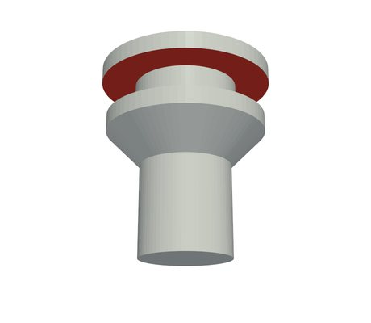
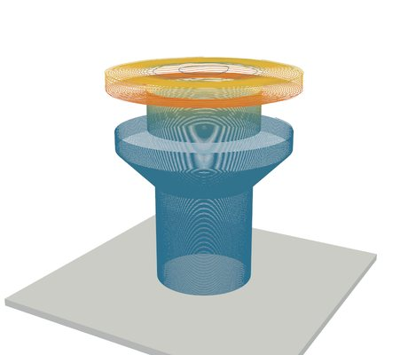
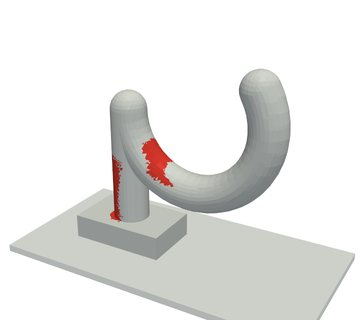
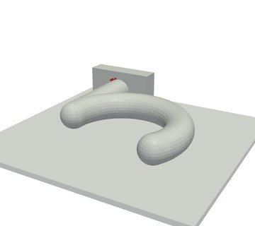

Senior thesis · 2026–2027
Five-axis 3D printer (S5)
A 3D printer whose bed tilts, and the software that curves each layer, so a part needs less support material or comes out stronger where it is pulled.
 Flat
Flat S5
S5Mushroom cap
Flat: the underside of the cap (red) hangs out past 45° and needs about 2.2 g of support. S5: the layers follow the cap, the overhang area drops from 724 to 1 mm², and no support is printed.

Flat
S5Column capital
Flat: the flared top needs support all round. S5: the overhang area drops from 452 to 0 mm², so it prints with no support at all.
The problem
A normal printer stacks flat layers. Anything that hangs out more than about 45° has nothing under it, so the slicer adds support material that is printed and then thrown away. Flat layers are also weak in one direction: a part pulled across its layers breaks along them.
A five-axis printer can tilt the part while it prints (our bed tilts up to 60°), so the layers don't have to be flat. The hard part is the software: deciding how the layers should curve and making sure the nozzle never hits the part or the bed.
What the slicer does
Each part on the plate gets one of two modes:
- Low support: the layers curve around the overhangs, so less of the part hangs over air.
- Strength: a finite element analysis (FEA) of the part under its loads finds where it is pulled hardest, and the layers curve so the pull runs along them, not across.
Then it checks every move for collisions with the tilted bed, fixes the ones it finds, and hands the curved layers to CuraEngine for the actual toolpaths. The printer runs RepRapFirmware 3.6.3 on a Duet 3, and I added the machine's five-axis kinematics to it, so the slicer and the printer use the same maths. Saving G-code refuses any file the printer would stop on, and lists the moves that would cause it.
Results: support
We compare S5 against normal flat slicing on a benchmark of 40 test parts, same print settings, same printer profile.
The parts that gained the most:
| Part | Flat support (g) | S5 support (g) |
|---|---|---|
| Flared vase | 3.52 | 0 |
| Wide cone | 3.09 | 0 |
| Flat mushroom | 2.13 | 0 |
| Round mushroom cap | 1.44 | 0 |
| Big T | 1.34 | 0 |
| Flag cantilever | 0.98 | 0 |
| Goblet (45° flare) | 0.93 | 0 |
| Spiral ramp tower | 0.87 | 0.01 |
| T shape | 0.70 | 0 |
| Tree branches | 0.53 | 0 |
Not every part improves. On a few (an umbrella, a shelf bracket) flat slicing still needs less support, and the 40-part totals above include them.
Results: strength

Flat
S5Wall hook
Flat layers (left) cross the hook's bend, its weakest point. In Strength mode (right) the layers follow the pull.
On 8 strength test parts, the stress pulling across the layers (the direction prints break in) went down on 7, by up to 56%.
My role
- Coordinate the team of five since September 2026: split the tasks, set the weekly priorities and keep the progress log.
- Built the slicer and the firmware kinematics. I worked with several AI coding agents on a shared task board: they claim tasks and log results, and I review and test their work before it is accepted.
- Used agentic AI to build a simple mass-spring-damper model of the printer that predicts its vibration in seconds; its loads feed the FEA checks of the critical brackets.